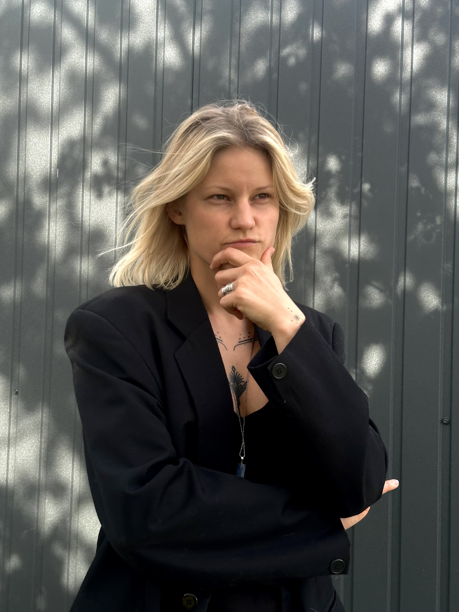

Walidacja i kwalifikacja w GMP — tak, żeby decyzja wytrzymała pytania inspektora.
Praktyczne kursy Akademii Walidacji i wsparcie projektów: pomieszczenia czyste, komory UDAF / BSC, izolatory, mapowanie temperatury i walidacja systemów skomputeryzowanych.
9+ lat w GMP | projekty w 6 krajach | podejście oparte na ryzyku

ekspertka ds. walidacji i kwalifikacji
Autorka Akademii Walidacji. Kwalifikuję pomieszczenia czyste, komory UDAF / BSC, izolatory i urządzenia termostatyczne oraz waliduję systemy skomputeryzowane.
Jestem specjalistką ds. walidacji i kwalifikacji z ponad 9-letnim doświadczeniem w środowisku GMP — w przemyśle farmaceutycznym, biotechnologicznym i wyrobów medycznych.
Prowadzę pełny cykl kwalifikacji — pomieszczeń czystych, systemów HVAC, komór UDAF / BSC, izolatorów oraz urządzeń i obszarów o kontrolowanej temperaturze — od projektu, przez DQ / IQ / OQ / PQ, po rekwalifikację.
Zajmuję się również walidacją systemów skomputeryzowanych (CSV) zgodnie z GAMP 5, EU GMP Annex 11 i 21 CFR Part 11 — od oceny ryzyka i URS, przez macierz śledzenia wymagań, po protokoły IQ / OQ / PQ i integralność danych.
Łączę praktykę walidacyjną z inżynierskim zapleczem HVAC, BMS i mediów krytycznych. Pracowałam przy projektach w Europie, USA i Azji.
W Akademii Walidacji dzielę się tym doświadczeniem: uczę nie tylko, jak wykonać test, ale jak podjąć decyzję i obronić ją przed inspektorem.
- Pomiary prędkości przepływu powietrza (UDAF / LAF)
- Pomiary krotności wymian powietrza (ACH) – systemy HVAC
- Testy szczelności filtrów HEPA (testy przecieku)
- Badania czystości powietrza (zliczanie cząstek)
- Pomiary różnicy ciśnień (kaskada ciśnień)
- Mapowanie temperatury i wilgotności (badania termiczne)
- Wizualizacja przepływu powietrza (testy dymowe)
- Testy powrotu do stanu równowagi pomieszczeń czystych
- Pomieszczenia czyste (HVAC) – C&Q i rekwalifikacja
- Systemy przepływu laminarnego (UDAF/LAF) – C&Q i rekwalifikacja
- Systemy barierowe (izolatory, RABS) – walidacja procesu i rekwalifikacja
- Urządzenia termostatyczne oraz strefy CRT/CCT – C&Q i rekwalifikacja
- Kwalifikacja pomieszczeń czystych i systemów UDAF
- Kwalifikacja urządzeń laboratoryjnych i procesowych
- Realizacja FAT / SAT / DQ / IQ / OQ / PQ
- Strategia i planowanie walidacji
- Podejście oparte na ryzyku (ICH Q9)
- Rekwalifikacja i zarządzanie cyklem życia
- Izolatory i biodekontaminacja H₂O₂
- Rozwiązywanie problemów i optymalizacja systemów
- Klasyfikacja GAMP 5 i ocena ryzyka
- URS / FS i macierz śledzenia wymagań (RTM)
- Protokoły IQ / OQ / PQ
- Audit trail i kontrola dostępu
- Backup / restore
- Integralność danych (ALCOA+)
- Zgodność z EU GMP Annex 11 i 21 CFR Part 11
- URS, SOP i dokumentacja walidacyjna
- Opracowanie i wdrażanie systemów zarządzania jakością (QMS)
- Odchylenia, CAPA, kontrola zmian
- Oceny ryzyka i wpływu
- Gotowość do audytów i inspekcji
- Zarządzanie ryzykiem i budżetem inwestycyjnym (CAPEX)
- Systemy HVAC i monitoring środowiskowy
- Systemy BMS / FMS / EMS
- Systemy mediów technicznych (ogrzewanie, chłodzenie, woda, gazy)
- Zgodność z GMP i EU GMP Aneks 1
Walidacja systemów skomputeryzowanych w środowisku GMP zgodnie z GAMP 5 i EU GMP Annex 11 — od klasyfikacji systemu i oceny ryzyka, przez URS i macierz śledzenia wymagań (RTM), po protokoły IQ / OQ / PQ i przygotowanie dokumentacji do audytów. Wsparcie kwalifikacji systemów i urządzeń w ramach Technicznego Zapewnienia Jakości.
Oprócz zarządzania pełnym cyklem kwalifikacji pomieszczeń czystych, stref o kontrolowanej temperaturze oraz urządzeń, prowadzę międzyzakładowy projekt standaryzacji procedur kwalifikacji i rekwalifikacji systemów HVAC, pomieszczeń czystych oraz urządzeń termostatycznych w zakładach Polpharma Biologics w Gdańsku i Warszawie.
Jako właścicielka pakietu prac (Work Package Owner) odpowiadałam za systemy HVAC, BMS, EMS, FMS, magazyny chłodnicze oraz pomieszczenia czyste w projekcie Recovery, w tym za przegląd projektu, wybór dostawców, negocjacje umów, koordynację wykonawców oraz przygotowanie list VPL, zapewniając zgodność z wymaganiami GMP i EU GMP Aneks 1.
Jako konsultantka międzynarodowa w projekcie Optima, odpowiadałam za opracowanie i przeprowadzenie walidacji cykli biodekontaminacji linii izolatorów oraz systemów H2O2 dla technologii pomieszczeń czystych, wspierając klientów farmaceutycznych w Chinach, Włoszech, USA, Danii, Niemczech i Szwajcarii.
Konsultantka wspierająca opracowanie i wdrażanie systemów zarządzania jakością (QMS) zgodnych z normami ISO. Opracowywanie dokumentacji kwalifikacyjnej (DQ/IQ/OQ/PQ) dla pomieszczeń czystych, stref chłodniczych oraz urządzeń procesowych.
Odpowiedzialna za zarządzanie systemami obiektowymi w 7 budynkach, obejmującymi obszary produkcyjne, laboratoria, magazyny i biura. Zakres obowiązków obejmował nadzór nad utrzymaniem ruchu, działania kwalifikacyjne oraz wdrażanie CAPA.
Odpowiedzialna za projekty koncepcyjne, budowlane i wykonawcze systemów HVAC dla projektów remontowych szpitali, w tym pomiary przepływu powietrza i regulację parametrów wentylacji.
Inżynierka sprzedaży odpowiedzialna za dobór urządzeń chłodniczych oraz prowadzenie komunikacji technicznej z klientami i producentami międzynarodowymi.
Wsparcie projektowania systemów HVAC i mediów technicznych dla dużych projektów komercyjnych: Bloomberg Palace w Londynie, Norway House w Warszawie oraz Browary Warszawskie w Warszawie.
Dostępna do projektów czasowych, długoterminowych kontraktów oraz bieżącego wsparcia walidacyjnego. Napisz, aby omówić potrzeby Twojego obiektu albo dobrać kurs do Twojej pracy.